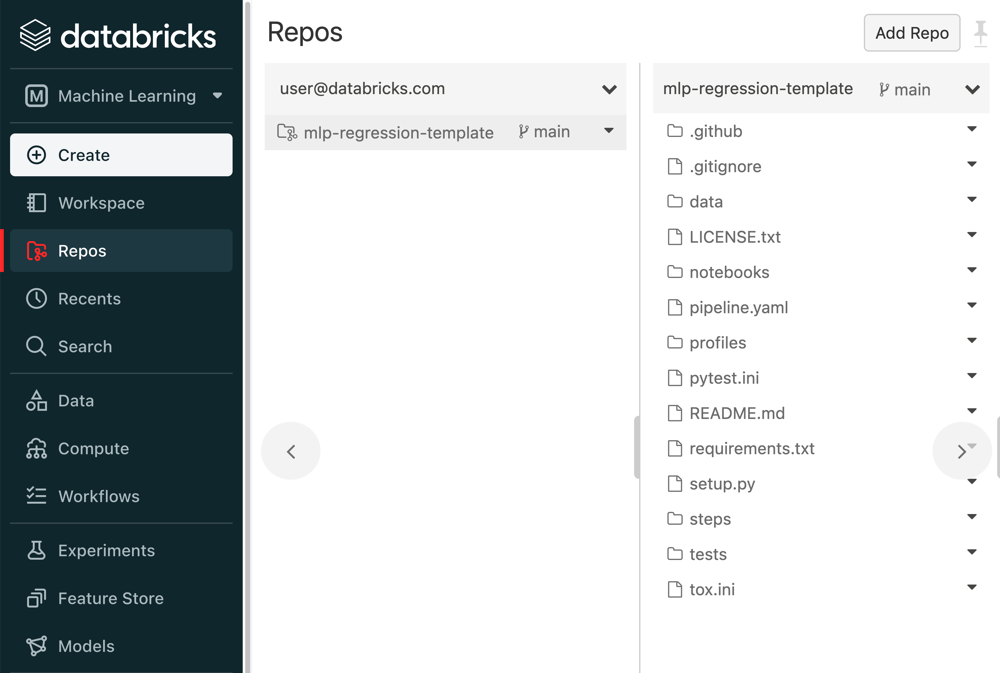
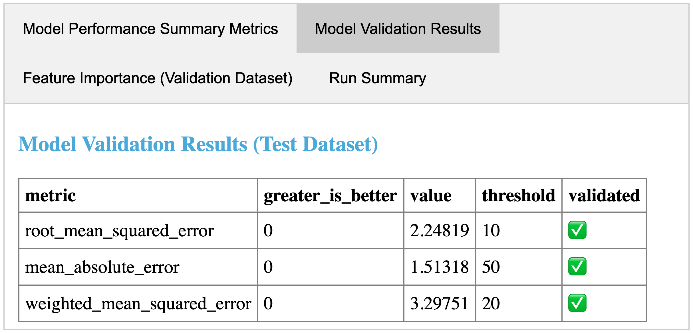

MLflow Pipelines (experimental)
MLflow Pipelines is a framework that enables data scientists to quickly develop high-quality models and deploy them to production. Compared to ad-hoc ML workflows, MLflow Pipelines offers several major benefits:
Get started quickly: Predefined templates for common ML tasks, such as regression modeling, enable data scientists to get started quickly and focus on building great models, eliminating the large amount of boilerplate code that is traditionally required to curate datasets, engineer features, train & tune models, and package models for production deployment.
Iterate faster: The intelligent pipeline execution engine accelerates model development by caching results from each step of the process and re-running the minimal set of steps as changes are made.
Easily ship to production: The modular, git-integrated pipeline structure dramatically simplifies the handoff from development to production by ensuring that all model code, data, and configurations are easily reviewable and deployable by ML engineers.
Quickstarts
Prerequisites
MLflow Pipelines is available as an extension of the MLflow Python library. You can install MLflow Pipelines as follows:
Local: Install MLflow Pipelines from PyPI:
pip install mlflow[pipelines]
Note that MLflow Pipelines requires Make, which may not be preinstalled on some Windows systems. Windows users must install Make before using MLflow Pipelines. For more information about installing Make on Windows, see https://gnuwin32.sourceforge.net/install.html.
Databricks: Install MLflow Pipelines from a Databricks Notebook by running
%pip install mlflow[pipelines], or install MLflow Pipelines on a Databricks Cluster by following the PyPI library installation instructions at https://docs.databricks.com/libraries/cluster-libraries.html#install-a-library-on-a-cluster and specifying themlflow[pipelines]package string. Note that Databricks Runtime version 11.0 or greater is required in order to install MLflow Pipelines on Databricks.
NYC taxi fare prediction example
The NYC taxi fare prediction example uses the MLflow Pipelines Regression Template to develop and score models on the NYC Taxi (TLC) Trip Record Dataset. You can run the example locally by installing MLflow Pipelines and running the Jupyter example notebook. You can run the example on Databricks by cloning the example repository with Databricks Repos and running the Databricks example notebook.
To build and score models for your own use cases, we recommend using the MLflow Pipelines Regression Template. For more information, see the Regression Template reference guide.
Key concepts
Steps: A Step represents an individual ML operation, such as ingesting data, fitting an estimator, evaluating a model against test data, or deploying a model for real-time scoring. Each Step accepts a collection of well-defined inputs and produce well-defined outputs according to user-defined configurations and code.
Pipelines: A Pipeline is an ordered composition of Steps used to solve an ML problem or perform an MLOps task, such as developing a regression model or performing batch model scoring on production data. MLflow Pipelines provides
APIsand a CLI for running pipelines and inspecting their results.
Templates: A Pipeline Template is a git repository with a standardized, modular layout containing all of the customizable code and configurations for a Pipeline. Configurations are defined in YAML format for easy review via the pipeline.yaml file and Profile YAML files. Each template also defines its requirements, data science notebooks, and tests. MLflow Pipelines includes predefined templates for a variety of model development and MLOps tasks.
Profiles: Profiles contain user-specific or environment-specific configurations for a Pipeline, such as the particular set of hyperparameters being tuned by a data scientist in development or the MLflow Model Registry URI and credentials used to store production-worthy models. Each profile is represented as a YAML file in the Pipeline Template (e.g. local.yaml and databricks.yaml).
Step Cards: Step Cards display the results produced by running a Step, including dataset profiles, model performance & explainability plots, overviews of the best model parameters found during tuning, and more. Step Cards and their corresponding dataset and model information are also logged to MLflow Tracking.
Usage
The general workflow for using MLflow Pipelines is as follows:
Clone a Pipeline Template git repository corresponding to the ML problem that you want to solve or the MLOps task that you want to perform. View the template’s README file for information about the Pipeline Steps that it defines and the results that it produces.
An example of cloning the MLflow Pipelines Regression Templategit clone https://github.com/mlflow/mlp-regression-template
Note
On Databricks, we recommend cloning the Pipeline Template git repository using Databricks Repos.

Run the pipeline and inspect its results. When a pipeline run completes, MLflow Pipelines creates and displays an interactive Step Card with the results of the last executed step.

An example step card produced by running the evaluate step of the MLflow Regression Pipeline. The step card results indicate that the trained model passed all performance validations and is ready for registration with the MLflow Model Registry.
Example API and CLI workflows for running the Regression Pipeline and inspecting results. Note that pipelines must be run from within their corresponding git repositories.import os from mlflow.pipelines import Pipeline from mlflow.pyfunc import PyFuncModel os.chdir("~/mlp-regression-template") regression_pipeline = Pipeline(profile="local") # Run the full pipeline regression_pipeline.run() # Inspect the model training results regression_pipeline.inspect(step="train") # Load the trained model regression_model_pipeline: PyFuncModel = regression_pipeline.get_artifact("model")
git clone https://github.com/mlflow/mlp-regression-template cd mlp-regression-template # Run the full pipeline mlflow pipelines run --profile local # Inspect the model training results mlflow pipelines inspect --step train --profile local # Inspect the resulting model performance evaluations mlflow pipelines inspect --step evaluate --profile local
Note
Each Pipeline Template also includes a Databricks Notebook and a Jupyter Notebook for running the pipeline and inspecting its results.
Example pipeline run from the Databricks Notebook included in the MLflow Pipelines Regression Template:
Make changes to the code and configurations in the Pipeline Repository. Code changes are made by modifying Python modules in the
stepssubdirectory. Configuration changes are made by editing the mainpipeline.yamlconfiguration file, as well as profile-specific configuration files in theprofilessubdirectory.Note
When making changes to pipelines on Databricks, it is recommended that you either edit files on your local machine and use dbx to sync them to Databricks Repos, as demonstrated below, or edit files in Databricks Repos by opening separate browser tabs for each YAML file or Python code module that you wish to modify.
Example workflow for efficiently editing a pipeline on a local machine and synchronizing changes to Databricks Repos# Install the Databricks CLI, which is used to remotely access your Databricks Workspace pip install databricks-cli # Configure remote access to your Databricks Workspace databricks configure # Install dbx, which is used to automatically sync changes to and from Databricks Repos pip install dbx # Clone the MLflow Pipelines Regression Template git clone https://github.com/mlflow/mlp-regression-template # Enter the MLflow Pipelines Regression Template directory and configure dbx within it cd mlp-regression-template dbx configure # Use dbx to enable syncing from the repository directory to Databricks Repos dbx sync repo -d mlp-regression-template # Iteratively make changes to files in the repository directory and observe that they # are automatically synced to Databricks Repos ...
Test changes by running the pipeline and observing the results it produces. MLflow Pipelines intelligently caches results from each Pipeline Step, ensuring that steps are only executed if their inputs, code, or configurations have changed, or if such changes have occurred in dependent steps. Once you are satisfied with the results of your changes, commit them to a branch of the Pipeline Repository in order to ensure reproducibility, and share or review the changes with your team.
Note
Before testing changes in a staging or production environment, it is recommended that you commit the changes to a branch of the Pipeline Repository to ensure reproducibility.
Note
By default, MLflow Pipelines caches results from each Pipeline Step within the
.mlflowsubdirectory of the home folder on the local filesystem. TheMLFLOW_PIPELINES_EXECUTION_DIRECTORYenvironment variable can be used to specify an alternative location for caching results.
{kind=link}
{kind=link}
{kind=link}
Pipeline Templates
MLflow Pipelines currently offers the following predefined templates that can be easily customized to develop and deploy high-quality, production-ready models for your use cases:
MLflow Pipelines Regression Template: The MLflow Pipelines Regression Template is designed for developing and scoring regression models. For more information, see the Regression Template reference guide and the Regression Pipeline API documentation.
Additional pipelines for a variety of ML problems and MLOps tasks are under active development.
Detailed reference guide
Template structure
Pipeline Templates are git repositories with a standardized, modular layout. The following example provides an overview of the pipeline repository structure. It is adapted from the MLflow Pipelines Regression Template.
├── pipeline.yaml
├── requirements.txt
├── steps
│ ├── ingest.py
│ ├── split.py
│ ├── transform.py
│ ├── train.py
│ ├── custom_metrics.py
├── profiles
│ ├── local.yaml
│ ├── databricks.yaml
├── tests
│ ├── ingest_test.py
│ ├── ...
│ ├── train_test.py
│ ├── ...
The main components of the Pipeline Template layout, which are common across all pipelines, are:
pipeline.yaml: The main pipeline configuration file that declaratively defines the attributes and behavior of each pipeline step, such as the input dataset to use for training a model or the performance criteria for promoting a model to production. For reference, see the pipeline.yaml configuration file from the MLflow Pipelines Regression Template.
requirements.txt: A pip requirements file specifying packages that must be installed in order to run the pipeline.
steps: A directory containing Python code modules used by the pipeline steps. For example, the MLflow Pipelines Regression Template defines the estimator type and parameters to use when training a model in steps/train.py and defines custom metric computations in steps/custom_metrics.py.
profiles: A directory containing Profile customizations for the configurations defined inpipeline.yaml. For example, the MLflow Pipelines Regression Template defines a profiles/local.yaml profile that customizes the dataset used for local model development and specifies a local MLflow Tracking store for logging model content. The MLflow Pipelines Regression Template also defines a profiles/databricks.yaml profile for development on Databricks.
tests: A directory containing Python test code for pipeline steps. For example, the MLflow Pipelines Regression Template implements tests for the transformer and the estimator defined in the respectivesteps/transform.pyandsteps/train.pymodules.
pipeline.yaml is the main
configuration file for a pipeline containing aggregated configurations for
all pipeline steps; Profile-based substitutions and
overrides are supported using Jinja2 templating syntax. template: "regression/v1"
data:
location: {{INGEST_DATA_LOCATION|default('https://nyc-tlc.s3.amazonaws.com/trip+data/yellow_tripdata_2022-01.parquet')}}
format: {{INGEST_DATA_FORMAT|default('parquet')}}
target_col: "fare_amount"
steps:
split:
split_ratios: {{SPLIT_RATIOS|default([0.75, 0.125, 0.125])}}
transform:
transformer_method: steps.transform.transformer_fn
train:
using: estimator_spec
estimator_method: steps.train.estimator_fn
evaluate:
validation_criteria:
- metric: root_mean_squared_error
threshold: 10
- metric: weighted_mean_squared_error
threshold: 20
register:
model_name: "taxi_fare_regressor"
metrics:
custom:
- name: weighted_mean_squared_error
function: weighted_mean_squared_error
greater_is_better: False
primary: "root_mean_squared_error"
Working with profiles
A profile is a collection of customizations for the configurations defined in the pipeline’s main pipeline.yaml file. Profiles are defined as YAML files within the pipeline repository’s profiles directory. When running a pipeline or inspecting its results, the desired profile is specified as an API or CLI argument.
import os
from mlflow.pipelines import Pipeline
os.chdir("~/mlp-regression-template")
# Run the regression pipeline to train and evaluate the performance of an ElasticNet regressor
regression_pipeline_local_elasticnet = Pipeline(profile="local-elasticnet")
regression_pipeline_local_elasticnet.run()
# Run the pipeline again to train and evaluate the performance of an SGD regressor
regression_pipeline_local_sgd = Pipeline(profile="local-sgd")
regression_pipeline_local_sgd.run()
# After finding the best model type and updating the 'shared-workspace' profile accordingly,
# run the pipeline again to retrain the best model in a workspace where teammates can view it
regression_pipeline_shared = Pipeline(profile="shared-workspace")
regression_pipeline_shared.run()
git clone https://github.com/mlflow/mlp-regression-template
cd mlp-regression-template
# Run the regression pipeline to train and evaluate the performance of an ElasticNet regressor
mlflow pipelines run --profile local-elasticnet
# Run the pipeline again to train and evaluate the performance of an SGD regressor
mlflow pipelines run --profile local-sgd
# After finding the best model type and updating the 'shared-workspace' profile accordingly,
# run the pipeline again to retrain the best model in a workspace where teammates can view it
mlflow pipelines run --profile shared-workspace
The following profile customizations are supported:
- overrides
If the
pipeline.yamlconfiguration file defines a Jinja2-templated attribute with a default value, a profile can override the value by mapping the attribute to a different value using YAML dictionary syntax. Note that override values may have arbitrarily nested types (e.g. lists, dictionaries, lists of dictionaries, …).Examplepipeline.yamlconfiguration file defining an overrideableRMSE_THRESHOLDattribute for validating model performance with a default value of10steps: evaluate: validation_criteria: - metric: root_mean_squared_error # The maximum RMSE value on the test dataset that a model can have # to be eligible for production deployment threshold: {{RMSE_THRESHOLD|default(10)}}
- substitutions
If the
pipeline.yamlconfiguration file defines a Jinja2-templated attribute without a default value, a profile must map the attribute to a specific value using YAML dictionary syntax. Note that substitute values may have arbitrarily nested types (e.g. lists, dictionaries, lists of dictionaries, …).
- additions
If the
pipeline.yamlconfiguration file does not define a particular attribute, a profile may define it instead. This capability is helpful for providing values of optional configurations that, if unspecified, a pipeline would otherwise ignore.Examplelocal.yamlprofile that specifies a sqlite-based MLflow Tracking store for local testing on a laptopexperiment: tracking_uri: "sqlite:///metadata/mlflow/mlruns.db" name: "sklearn_regression_experiment" artifact_location: "./metadata/mlflow/mlartifacts"Warning
If the
pipeline.yamlconfiguration file defines an attribute that cannot be overridden or substituted (i.e. because its value is not specified using Jinja2 templating syntax), a profile must not define it. Defining such an attribute in a profile produces an error.